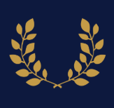

KLYOS

A brand and web platform for a start-up capital investment firm with UI/UX and cultural insights fostering trust through collaborative user engagement. The platform features a clean, responsive interface with intuitive navigation and data visualization tools. The design integrates cultural insights to resonate with diverse audiences, emphasizing reliability and community engagement. The purpose is to create a trustworthy digital presence that facilitates informed investment decisions, aligning with the firm’s mission to foster collaborative financial relationships.